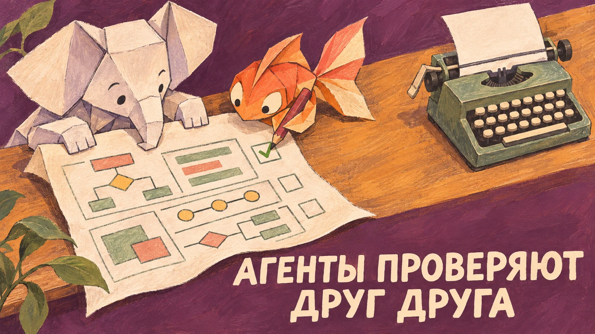
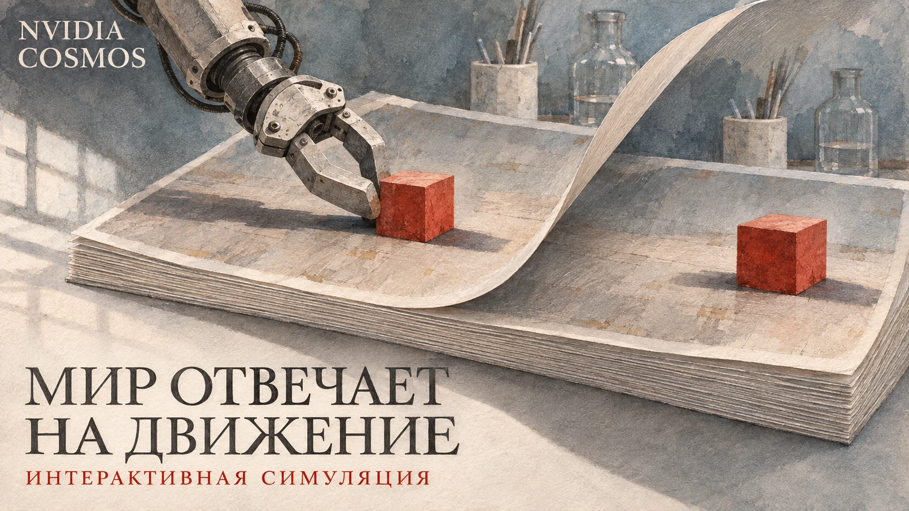

Все статьи
Полный архив опубликованных материалов ХПИИ в порядке выхода.
10 ноября 2026

Google показала два новых TPU: один для секретов, другой вдвое мощнее
Новости ИИGoogle анонсировала TPU 8tx с аппаратной защитой конфиденциальных вычислений и TPU 8i Max с удвоенной относительно TPU 8i вычислительной мощностью и пропускной способностью памяти. Сроки доступности пока не названы.

«Ищите женщину»: глава NVIDIA оказался в центре шпионского скандала
Новости ИИСовет NVIDIA начал независимое расследование после публикаций о предполагаемой попытке иностранной разведки воздействовать на Дженсена Хуанга; компания пока не видит признаков компрометации секретов.

Asahi Linux меняет лицензию из-за «отмывания» кода через ИИ
Новости ИИAsahi Linux начала переход с лицензии MIT на GPLv2+, заявив о сторонних заимствованиях незавершённого кода, в том числе о попытках скрывать его происхождение с помощью больших языковых моделей.

Claude Code сливал email пользователей чужим сайтам!
Скайнет просыпаетсяПользователи Claude Code обнаружили, что ИИ-помощник для программистов мог включать их email в HTTP-запросы к сторонним сайтам. Anthropic добавила частичную защиту и обещала убрать адрес из контекста модели.

OpenMOSS представила MOSS-Live: ИИ разговаривает, пока выполняет задания
Новости ИИOpenMOSS представила MOSS-Live: голосовая система поддерживает беседу, реагирует на перебивания и параллельно выполняет задания через внешние инструменты. Доступны демо и бета-версия API.

LG открыла бесплатный API K-EXAONE 2.5 для разработчиков
Новости ИИLG AI Research открыла бесплатный API модели K-EXAONE 2.5 для разработчиков и компаний. API совместим с форматом OpenAI, действуют ограничения на частоту запросов.

Perplexity запустила Teammates: личные ИИ-агенты теперь работают командой
Новости ИИPerplexity представила Teammates — постоянных ИИ-агентов, которым можно поручать задачи и передавать работу друг другу. Веб-доступ по подписке Max; локальный Computer для Mac получил отдельные условия использования.

Алекс Стамос предупредил о «тёмной эпохе» кибербезопасности из-за ИИ
Громко сказаноАлекс Стамос из Cognition предупредил об удешевлении кибератак с помощью ИИ-агентов и объяснил, почему защитным системам тоже нужна автоматизация с ограниченными полномочиями.
9 ноября 2026

«Мама, это я! Срочно нужны деньги!» Как проверить знакомый голос, если его мог подделать ИИ
Скайнет просыпаетсяЧто делать, если мошенники звонят голосом родственника: инструкция на первые 30 секунд, способы независимой проверки, действия после перевода, профилактика для семьи, сервис «второй руки» и памятка.

Google представила Elephant-Goldfish: ИИ-агенты проверяют друг друга перед написанием кода
Новости ИИGoogle обновила Elephant-Goldfish Model (EGM): один ИИ-агент держит контекст проекта, а независимые рецензенты с чистым контекстом проверяют спецификацию до написания кода; версия 0.1.1 расширила проверки и экспериментальную совместимость.

В США центр проверки ИИ остался без руководителя
Новости ИИРасследование Associated Press: американский CAISSI остаётся без постоянного директора, сотрудники получили просьбу неформально отчитываться перед подразделением Белого дома; возникают вопросы о независимости и прозрачности проверки безопасности ИИ.

Голос Элвиса и песни Эминема: против Suno подали два новых иска
Новости ИИ6 ноября 2026 года правообладатели Элвиса Пресли и издатель песен Эминема подали два отдельных иска против Suno по поводу обучения музыкального ИИ, имитации голоса и воспроизведения защищённых произведений.

ИИ отправили искать инопланетян. Теперь он сам управляет радиотелескопом
Новости ИИSETI Institute и Breakthrough Listen подключили ИИ-агентов к радиотелескопам Allen Telescope Array для управления антеннами и обработки сигналов в ходе наблюдений; NVIDIA заявляет скорость обработки до 2,4 Тбит/с.
8 ноября 2026

Grok начал вшивать невидимые метки в ответы через API
Новости ИИС 7 ноября 2026 года семь моделей Grok применяют невидимую статистическую маркировку текстовых ответов через API. Администраторы могут отключить её для некоторых моделей; обнаружение не гарантировано.
ChatGPT и Codex посадят на один лимит. OpenAI меняет правила подписки с декабря
Новости ИИOpenAI планирует с декабря 2026 года объединить лимиты сложных задач ChatGPT, Work и Codex для подписчиков Plus, Pro и Business. Instant останется вне общего токенного лимита, размеры квот пока не раскрыты.

Маск: роботы будут впятеро продуктивнее людей, ИИ уйдёт в космос, а доходы вырастут
Громко сказаноИлон Маск на конференции Baron 6 ноября предсказал пятикратную производительность гуманоидов, развитие орбитальных ИИ-центров SpaceX и рост Starlink. В материале также рассматриваются его планы Starship, Neuralink и обещания высокого дохода.

Фальшивые директора и юристы: троих обвинили в ИИ-афере на $129 млн
Скайнет просыпаетсяПрокуратура США обвинила троих человек в международной схеме мошенничества на сумму более $129 млн с использованием ИИ для подделки голосов и изображений руководителей и юристов.
7 ноября 2026

Хакеры взломали OpenAI с помощью Claude. Теперь они её партнёры
Скайнет просыпаетсяOpenAI заключила соглашение с Hacktron — командой, которая ранее обнаружила уязвимости в системе доступа к её внутренним ресурсам. Теперь исследователи будут совместно проверять безопасность интеграций.

NVIDIA показала ИИ, который продолжает виртуальный мир после движения робота
Новости ИИNVIDIA подробно представила четыре модели Cosmos 3 Nano для интерактивной видеосимуляции действий роботов и автономных автомобилей. Открытые веса доступны с 20 октября.
ИИ использовали при создании более 80% самых популярных игр Roblox
Новости ИИRoblox сообщила, что разработчики более 80 из ста самых популярных игр платформы применяли ИИ. Два почти полностью созданных с ИИ проекта вошли в топ-20 по одновременным игрокам.